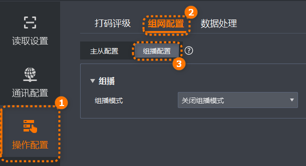

多读码器组播组网由一个主读码器和多个从读码器组成，主读码器用于同步触发号，所有读码器各自传输读码数据至读码平台。
组播组网的主要原理是将多台读码器中的其中一台设置为主读码器，其他读码器设置为从读码器，主读码器和从读码器同时触发采图，主读码器同步触发号给其他从读码器，主读码器和从读码器传输读码数据至读码平台，读码平台基于触发号进行整合同步处理，输出融合后的结果。适用于物流多面扫（一般大于3台读码器）场景，通过读码平台将主从读码器所有输出融合一起发出，实现多读码器的协同工作。
在IDMVS主界面功能导航栏，选择，进入组播配置页签配置如下参数。
不支持同时配置组播和主从组网功能。
